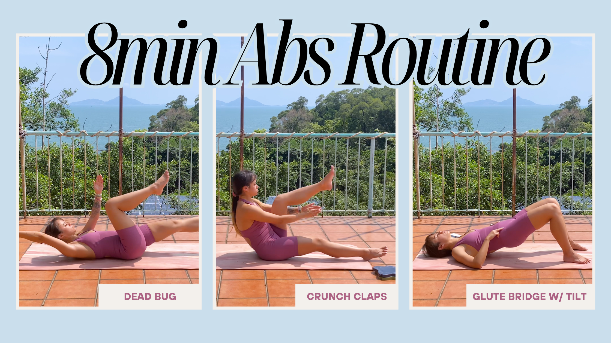

7 daily ab exercises & stretches for anterior pelvic tilt
An 8 minute daily routine to help strengthen and stretch the muscles that stabilise your body.

Does your lower back feel right from sitting in the office all day? Or do you have terrible posture, like mine, from being a part of the generation that discovered the internet and smartphones?
We need to strengthen and lengthen our core muscles and our lower back. I’ve put together a quick little routine to help strengthen and stretch this area.
This workout is beginner friendly! It is designed to practice activating those dormant muscles needed to bring your pelvis back into neutral alignment.
Workout Breakdown:
- Cat Cow
- Supine Core Brace
- Crunch Claps x2
- Dead Bug x2
- Glute Bridge w/ Tilt x2
- Double Knee to Chest Stetch
- Child's Pose
Combination of stretching
Stretching is important, and it serves a different purpose to strengthening your core. The stretching at the beginning gently warms up your core, and wakes those muscles up. Doing so ensures you are using the correct muscles later when performing the exercises. The Supine Core Braces are particularly great for the beginning of this routine. It ensures those Glute Bridges later are targeting your glutes, rather than your legs.
Why repeat sets?
You may be wondering why not add different exercises, rather than repeat the same ones.
If your muscles are weak, like mine, or even if you’re a beginner, muscle memory for these exercises is key. Repeating the exercise makes sure you are activating those muscles, and bracing your core in the correct manner.
Doing the exercise once does not serve its purpose of deeply fatiguing the muscle. (So you don’t want the workout to go to waste!)
1. Cat Cow
This stretch helps you practice posterior pelvic tilt (cat position), useful for realigning the fixed arch caused anterior pelvic tilt. Really focus on the feeling on your lower spine and pelvis.
2. Supine Core Brace
This helps you activate the deep transverse abdominis, a layer of your abs that wraps around your toeso. You are essentially pulling the pelvis into neutral by flattening the lower back.
3. Crunch Claps
This exercise targets the top portion of your abs. You are practicing gently pulling the ribcage down towards the pelvis. This strengthening exercise can help with that excessive arch caused by anterior pelvic tilt.
4. Dead Bug
This exercise is good for teaching core stability while focusing on body control. Consciously unsure you are keeping the lower back on the floor while carrying out this exercise. This prevents you from arching the lower back under load.
5. Glute Bridge w/ Tilt
As you may know, the traditional glute bridge strengthens your glutes. But what if you aren’t actually tucking your tailbone in properly to activate your glutes? Adding the tilt ensures you are activating the right muscle group.
6. Double Knee to Chest Stetch
This stretch ends the workout by lengthening the lower back muscles that become tight and shortened from sitting all day in the same position. Doing this exercise will create space in the lumbar spine if you want to reduce the arched position.
7. Child's Pose
A great last exercise, and such a classic Yoga pose! This exercise calms down your breathing after all that core work. It releases tension in your hip flexors and resets the pelvis towards neutral.